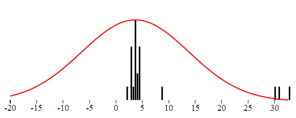

In this post I will present an very simple and easy to implement method to detect and detect extreme values in any dataset.
In a set of data points outliers are values that should not be present in the dataset. Typically these can be measurement errors, or human mistakes such as numerical values filled by the users.
Detecting these values might be very hard or even impossible and a whole field of statistics called Robust Statistics covers this subject. If you are further interested into the subject please read the paper "Quantitative Data Cleaning For Large Databases" written by Joseph M. Hellerstein from UC Barkeley. I have just created two aggregates for SQL Server 2008 which help efficiently get the outliers and extreme values from the data stored in SQL Server.
Any dataset can be characterized by the way the data is distributed over the whole range. The probability that a single point has given value in the dataset is defined using the probability distribution function. The Gaussian standard distribution is only one among many distribution functions.
The data is somehow gathered around the "center", and most values fall not far. Rare are the values really far away from the center. Intuitively the ouliers are points wery far from the center. Consider the following set of numbers which represent in minutes the length of a popular song:
3.9,3.8,3.9,2.7,2.8,1.9,2.7,3.5, 4.4, 2.8, 3.4, 8.6, 4.5, 3.5, 3.6, 3.8, 4.3, 4.5, 3.5,30,33,31
You have probably spotted the values 30,33 and 31 and you immediately recognized it as an outlier. Even if the Doors would double the length of their keyboard solo we would not get this far.
The standard distribution can be described using the distribution function. The distribution function defines the probability that the point will have given value. The function is defined with two parameters: the center and the dispertion. The center is the most common value, the one around which all others are gethered. The dispertion describes how far the values are scattered from the center.
We can visualize both the theoretical and the real distribution of data. The distribution probability function is continous and thus can charted as simple line. The distribution of the real data in turn can be charted using the histogram. Besides the SQL implementation I have also created a JavaScript version, which I have incorporated directly to my KoExtensions project. A simple application which I have used to create all the charts given here can be found on the GitHub page.
Here is the histogram of the example data
In perfect world the center is the mean value. That value is probably not a part of a data set but represents the typ1.ical value. The seconds measure to identify how far from the center the data is dispersed is called standard deviation. If we want to obtain the standard deviation from data we take the distance of each point from the center, square these vaues add the together and take square root. So we actually have all we need to get the distribution parameters from the data.
This approach ofcourse has one main flaw. The mean value is affected by the outliers. And since the dispertion is deduced using the mean and and the outliers itself are taken into account, it as well will be affected by them. In order to get a decription of the dataset not affected by the outliers one needs to find a different way.
The simpliest and very efficient replacement for the mean as the center of the data is the meadian. Median is such value that half of the points in the dataset are smaller the median. That is if the data set consists of even number of samples, we just need to order the values and take mean of the two values in the middle of the ordered array. If the data consist of odd number of values then we take the element exactly in the middle of the ordered data. The before mentioned paper describes two more alternatives: trimmed mean, winsorsized mean. Both of these are based on the exclusion of marginal values and I did not used them in my implementation.
Let's take the median of the given dataset and see if the distrubution function based on it fits better the data. Even though the center is now in correct place the shape of the function does not fit completely the data from the histogram. That is because the variance is still affected by the outlier.
Standard variance takes into account the the distance of all the numbers from the center. To rule out the outlier, we can just use the median of distances. The outlier's distance from the center is much bigger than other distance and by taking the median of the distance we can get rid of outliers influence over the variance. Here is the distribution function using this Robust type of dispertion. This characteristic is called MAD - Median Absolute Deviation.
Now that we have the value of "real" center and "real" spread or dispertion we can state thate the outlier is a value which which differs "too much" from the center, taking into account the dispertion. Typically we could say that the outliers are souch values that have a distance from center greter or equal to 10 * dispertion. The question is how to specify the koeficient. Luckily there is a statistics method called Hampel x84 which gives a formula to obtain the coeficient. Hampel X84 labels as outliers any points that are more than 1:4826x away from the MAD. In this formula x is the number which would be used in pure data set, in absence of any outliers.
A question which might arise is up to which kind of messy data this method can be used. A common intuition would say that definitely more than the half of the data has to be "correct", in order to be able to detect the incorrect ones. To be able to measure the robustness of each method of detecting outliers, statisticians have introduced a term called Breakdown point. This point states which percentage of the data can be corrupted in order for this method a given method to work. Using the Median as the center with the MAD (Median Absolute Deviation) has a breakdown point of 1/2. That is this method works if more than half of the data is correct. The standard arithmetic mean has a BP = 0. It is directly affected by all the numbers and one single outlier can competely move the data.
In order to implement detection of outliers in SQL, one needs to first have the necessary functions to compute the mean, median and dispertition. All these functions are aggregates. Mean (avg) and Dispertion (var) are already implemented in SQL Server. If you are lucky enough to use SQL Server 2012 you can use the built-in median aggregate as well, the robust dispertion however has to be implemented manually even on SQL Server 2012.
Implementing aggregates for SQL Server is very easy, thanks to the predefined Visual Studio template. This templates will create a class for you which implements the IBinarySerializable interface and is decorate with couple attributes defined in the Microsoft.SqlServer namespace.
This class has 4 important methods:
Here is the example of the Median aggregate
private Listld; public void Init() { ld = new List (); } public void Accumulate(SqlDouble value) { if (!value.IsNull) { ld.Add(value.Value); } } public void Merge(Median group) { ld.AddRange(group.ld.ToArray()); } public SqlDouble Terminate() { return Tools.Median(ld); }
Note that some aggregates can be computed iteratively, in that case all the necessary logic is in the Accumulate method and the Terminate method can be empty. With Median this is not the case (even though some iterative estimation methods exist (link...). For the sake of the completness, here is the implementation of median that I am using. It is the standard way: sorting the array and taking the middle element or average of the two middle elements. I am returning directly SqlDouble value, which is the result of the aggregate.
public static SqlDouble Median(Listld) { if (ld.Count == 0) return SqlDouble.Null; ld.Sort(); int index = ld.Count / 2; if (ld.Count % 2 == 0) { return (ld[index] + ld[index - 1]) / 2; } return ld[index]; }
Implementing the Robust variance using the MAD method is very similar, everything happens inside the Terminate method.
public SqlDouble Terminate()
{
var distances = new List();
var median = Tools.Median(ld);
foreach (var item in ld)
{
var distance = Math.Abs(item - median.Value);
distances.Add(distance);
}
var distMedian = Tools.Median(distances);
return distMedian;
}
That implementation is directly the one described above: we take the distance of each element from the center (median) and than we take the median of the distances.
Having implemented both aggregates, detecting the outlier is just a metter of SQL query - giving all the elements which are further away from the center than the variance multiplied by a coeficient.
select * from tbUsers where Height > ( Median(Height) + c*RobustVar(Height)) or Height < (Median(Height) - c*RobustVar(Height))
You will have to play with the coeficient value c to determine which multiplication gives you the best results.
The same can be implementated in JavaScript. If you are interested in a JavaScript implementation you can check out the histogram chart from KoExtensions. This charting tool draws the histogram and the data distribution function. You can than configure it to use either Median or Mean as the center of the data as well as to use MAD, or standard variance to describe the dispertion.
KoExtensions is based on Knockout.JS and adds several usefull bindings and the majority of them to simpify charting. Behind the data is charted using D3.
To draw a histogram chart with the ditribution and detecting the outliers at the same time one needs just few lines of code
var exData = [3.9,3.8,3.9,2.7,2.8,1.9,2.7,3.5, 4.4, 2.8, 3.4, 8.6, 4.5, 3.5, 3.6, 3.8, 4.3, 4.5, 3.5,30,33,31]; function TestViewModel() { var self = this; self.data = ko.observableArray(exData); } var vm = new TestViewModel(); ko.applyBindings(vm); initializeCharts();Knockout.JS is a javascript MVVM framework tool which gives you all you need to create bi-directional binding between the view and the view model, where you can encapsulate and unit test all your logic. KoExtensions adds a binding call "histogram", which takes simple array and draws a histogram. In order to show the probability function and the outliers one has to set the options of the chart as shown in the example above.